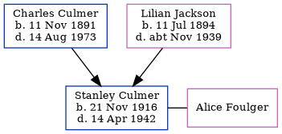

Lilian May Culmer (née Jackson) 1894 - c1939
[ Home ] | [ Calendar ] | [ Surnames Index ] | [ Census Index ] | [ Family History ]Lilian Jackson, the wife of Charles Ernest Culmer (the second cousin twice-removed on the mother's side of Nigel Horne), was born in Strood, Kent, England on Jul 11, 18941,2,3, was baptized there at St Mary on Oct 5, 1894 and also married Charles (an electric & oxy-ace wealde foreman with whom she had 1 child, Stanley Wilson Charles) there at St Nicholas on Dec 26, 19144.
During her life, she was living at 44 Pitfold Road, Lee, London, England in 1938 and on Sep 29, 19391.
She died c. Nov 1939 in Lewisham, London, England3.
Children
- Stanley Wilson Charles was born on Nov 21, 1916
Citations
- 1939 Register - Findmypast (was the wife of the head of the household)
- England & Wales births 1837-2006 - Findmypast
- England & Wales deaths 1837-2007 - Findmypast
- England & Wales Marriages 1837-2005 - Findmypast
Media
1938 Electoral Register

England & Wales marriages 1837-2005 - BMD/M/1914/4/AZ/000623/001
England & Wales births 1837-2006 - BMD/B/1894/3/AZ/000294/233
Kent marriages and banns - PRS/MEDWAY/MAR/0068680/2
Kent Baptisms - PRS/MEDWAY/BAP/0230481
England & Wales deaths 1837-2007 - BMD/D/1939/4/AZ/000202/025
Family Tree
Generated by ged2site. Last updated on Jun 11, 2024